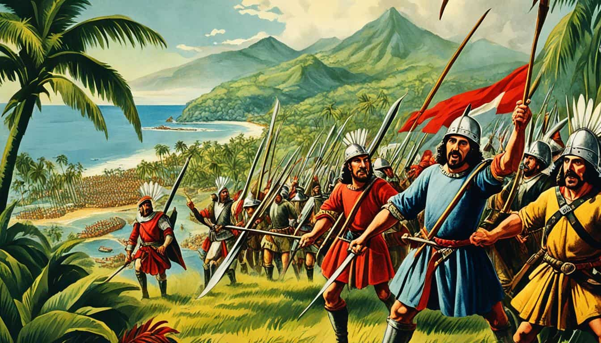

Year 1572Spanish Empire firmly established its claim over the Philippines | |
 |
1572 In 1572, the Spanish Empire firmly established its claim over the Philippines, an archipelago comprising 7,641 islands, following the strategic capture of Manila. This pivotal event marked the beginning of a significant colonial presence in the region, which would have lasting implications for both the Philippines and the broader Spanish Empire. The establishment of the Manila galleon trade route from 1565 to 1815 was a crucial development during this period, as it facilitated biannual voyages between the Philippines and Mexico for over two centuries. This trade route not only enabled the exchange of goods, such as silk, spices, and other valuable commodities, but also served as a conduit for cultural and demographic exchanges between Asia and the Americas. Filipino men were often compelled to serve as sailors on these trading vessels, becoming some of the earliest Southeast Asians to migrate to the New World. Their involvement in the galleon trade was not merely a matter of employment; it represented a significant movement of people across the Pacific, contributing to the early globalization of trade |